| T (K) | \(\dot{V}\) (cm3 min-1) | CA,0 (M) | CB,0 (M) | CY,0 (M) | CZ,0 (M) | CY,1 (M) |
|---|---|---|---|---|---|---|
| 300 | 50 | 0.5 | 0.5 | 0.5 | 0.5 | 0.86 |
| 300 | 50 | 0.5 | 0.5 | 0.5 | 1.0 | 0.82 |
| 300 | 50 | 0.5 | 0.5 | 0.5 | 2.5 | 0.69 |
| 300 | 50 | 0.5 | 0.5 | 0.5 | 5.0 | 0.61 |
| 300 | 50 | 0.5 | 0.5 | 1.0 | 0.5 | 1.38 |
| 300 | 50 | 0.5 | 0.5 | 1.0 | 1.0 | 1.33 |
| 300 | 50 | 0.5 | 0.5 | 1.0 | 2.5 | 1.19 |
| 300 | 50 | 0.5 | 0.5 | 1.0 | 5.0 | 1.10 |
20 Analysis of Kinetics Data from a CSTR
This section of Reaction Engineering Basics focuses upon the analysis of kinetics data for the purpose of assessing the accuracy of a proposed rate expression. Chapter 18 presented a general introduction to kinetics data generation and analysis and Chapter 19 examined the analysis of kinetics data generated using a BSTR. This chapter is like Chapter 19 except it is focused on the analysis of kinetics data generated using a CSTR.
20.1 Laboratory CSTRs
There are many similarities between BSTRs and CSTRs. The primary difference is that fluid continually flows in and out of a CSTR. Basically CSTRs are BSTRs with inlet and outlet flow streams. Other than the stopped flow reactor, the BSTRs described in Chapter 19 could be converted to CSTR simply by adding a flow in and a flow out. In the case of the recirculation loop reactor, Figure 19.2, the flow in and out should be small compared to the recirculation flow within the loop. As with the BSTR, one of the most important characteristics of a CSTR is that it is perfectly mixed. As discussed below, when a CSTR is used to generate kinetics data, it is preferable to operate the CSTR at steady state. Consequently, in addition to assessing the mixing before experiments begin, it is also important to verify steady-state operation while conducting the experiments.
20.1.1 Testing the Ideality of a CSTR
Given the similarities between BSTRs and CSTRs, most of the discussion in Chapter 19 applies here, as well. Specifically, one of the most important requirements is that the reactor must be perfectly mixed. Smoke tests and the measurement of the reactor response as the agitation rate is increased again can be used to test for perfect mixing. In addition, a property known as the residence time distribution can be used to assess how well a reactor conforms to the assumptions of an ideal CSTR. Essentially, it provides a necessary, but not sufficient, criterion that the laboratory reactor must satisfy. The measurement and use of the residence time distribution will be presented in Chapter 23.
20.2 CSTR Kinetics Experiments and Data
The nature of kinetics experiments involving a CSTR and the data they generate is different in some respects from a BSTR. To prevent the generally strong temperature dependence of reaction rates from masking weaker composition and pressure effects, steady-state experiments using a temperature controller are preferred. The temperature controller continually monitors the reactor temperature and adjusts the heat input and/or cooling so that the reacting fluid temperature remains constant. To prevent temperature effects from masking composition effects, experiments should be performed in blocks where all of the experiments in a block are performed at the same temperature.
When the experimental CSTR operates at steady state, the reactor design equations are ATEs. Since the reacting fluid temperature is constant and known, the mole balance design equations can be solved independently of the energy balances. The outlet molar flow rates of the reagents can be calculated using only the mole balances, so they are the only design equations needed when analyzing steady-state CSTR kinetics data.
In a typical CSTR kinetics experiment, the rate of fluid flow into the reactor is set along with the composition of the feed fluid, the pressure and the reacting fluid temperature. Once these inputs have been fixed, the flow rate and composition of the fluid leaving the reactor is monitored. Initially the outlet composition and flow rate may change over time. This indicates that the CSTR has not yet reached steady state. When the outlet flow rate and composition become constant, the CSTR has reached steady state, and the response can be measured to conclude the experiment. This is very different from BSTR experiments where the response was measured several times during a single experiment. The reason, of course, is that the composition changes during a BSTR experiment wherease nothing changes during a steady-state CSTR experiment. Consequently, the generation of kinetics data using a CSTR typically involves many more experiments compared to when a BSTR is used. Because reagents are flowing the whole time until steady-state is reached, CSTR experiments typically consume more reagent than batch experiments.
20.3 Design of CSTR Experiments
In isothermal BSTR experiments the initial composition and pressure of the reacting fluid and the elapsed time at which the response was measured were the inputs that were adjusted so that the experiments sampled a wide range of compositions. In a sense, the same is true of flow reactor experiments (both CSTR and PFR), but in flow reactors the space time, Equation 6.1, determines how long the reaction is allowed to proceed instead of the elapsed wall-clock time (see Chapter 6). This means that for flow reactors there are more reactor inputs that can be adjusted from experiment to experiment.
As noted in Chapter 19, preliminary studies typically define ranges of interest for temperature, pressure, and composition, and the purpose of kinetics experiments is to generate kinetics data that span those ranges. For each factor (e.g. the temperature, pressure, the concentration of reagent A, the concentration of reagent B, etc.) a set of values (also called levels) are chosen that span its range of interest. Increasing the number of levels improves the resolution of the effect of that factor upon the reaction rate. At the same time, increasing the number of levels increases the number of experiments that must be performed. Once the levels have been chosen for each factor, a factorial design like that described in Chapter 18 can be used to specify the experiments that will be performed.
20.3.1 Adjusted Experimental Inputs
Temperature is always an important factor in kinetics experiments. The pressure is constant in CSTR experiments, so if pressure is a factor of interest, the reactor pressure becomes one of the adjusted inputs. Typically the pressure does not affect the rate of liquid-phase reactions, but it can be important for gas-phase reactions.
The concentrations (or, for gases, partial pressures) within the reactor are the ones that need to span their range of interest, but unfortunately they cannot be adjusted directly. Instead, the composition and flow rate of the feed entering the reactor are adjusted. Depending upon the configuration of the feed system, the variables that can be adusted include the molar flow rates of the individual reagents or the volumetric flow rate of the feed and the concentrations of the reagents in that feed. Changing these quantities effectively changes the starting composition and the space time. (This assumes that the same reactor will be used in every experiment so the reactor volume cannot be adjusted to vary the space time.)
20.3.2 Experimental Responses
It was noted in Chapter 19 that there are many different quantities that can be used as the experimental response. That discussion won’t be repeated here. The response should be a quantity that is directly related to the composition of the fluid leaving the reactor or to the extent of reaction relative to the reactor feed. In other words, after measuring the response and knowing the feed, it should be possible to calculate the concentration of every reagent in the product stream leaving the reactor.
20.4 CSTR Data Analysis
The analysis of kinetics data generated using a CSTR is analogous to the analysis of data from a BSTR, Chapter 19. First a steady-state CSTR model is generated. The rate expression (and hence the rate expression parameters) appears in the CSTR model. That model is then used to generate a predicted response model. The predicted response model relates the response to the adjusted experimental inputs and the rate expression parameters. It can be fit to the experimental data. That is the best estimates for the values of the rate expression parameters can be taken to be the ones that minimize the difference between the measured responses and the model-predicted responses. Fitting the predicted response model to the experimental data yields estimates for the rate expression parameters, 95% confidence intervals (or standard errors) for the estimated parameters, amd the coefficient of determination. Using the estimated rate expression parameters, the model predicted responses for all of the experiments, and the experiment residuals for all of the experiments can be calculated and used to generate assessment graphs. Finally the accuracy of the resulting model is assessed.
A concise assignment summary can be useful when a kinetics data analysis is undertaken. In this book the summary identifies the reactor used in the experiments and how it was operated, and it includes a simple schematic representation of that reactor. It lists the adjusted experimental inputs and the experimental response. The rate coefficient estimates and uncertainties, coefficient of determination, model-predicted responses and experiment residuals are typically shown in the summary as the quantities of interest because they are used directly or to make assessment graphs that for the assessment of the accuracy of the rate expression. The assignment summary concludes with a listing of given and known constants from the assignment narrative. If it is permissible to choose a basis for the calculations, it is included among the given and known constants.
20.4.1 The Steady-State CSTR Model
The formuation of a steady-state CSTR model involves selecting and simplifying the design equations, guessing a design equations solution, defining the residuals function that is needed to solve the design equations, and defining a CSTR model function that solves the design equations.
Design Equations During the analysis of kinetics data the CSTR design equations are solved to find the outlet molar flow rates of the reagents. If the reactor operates at steady-state and at a known temperature, the mole balances can be solved for the outlet molar flow rates independently of any energy balances. Therefore only the mole balances are included in the design equations.
The general form of the CSTR mole balances is given in Equation 6.24. When the reactor operates at steady-state, the time derivatives are all equal to zero. Additionally, if only one reaction is taking place within the reactor, the sum over the reactions reduces to a single term and it isn’t necessary to index the reaction. Accordingly, the steady-state CSTR mole balances for kinetics data analysis take the form shown in Equation 20.1, with one mole balance for each reagent present in the system. Anticipating that the design equations will be solved numerically Equation 20.1 is written in the form of a residual expression.
\[ 0 = \epsilon = \dot{n}_{i,0} - \dot{n}_{i,1} + \nu_i r V \tag{20.1}\]
Initial Guesses for the Design Equations Solution The steady-state CSTR design equations are ATEs. When they are solved numerically, a guess for their solution must be provided. During the analysis of kinetics data, the design equations will be solved for every experiment in the data set. The likelihood of convergence to a solution can be improved if the measured responses are used to generate guesses. To do so, the inlet molar flow rates and the measured response are used to calculate the extent of reaction. Then the extent of reaction and the inlet molar flow rates are used to calculate guesses for the outlet molar flow rates. (See Chapter 3.)
Residuals Function The residuals function is written by the engineer analyzing the kinetics data, but it is used by an ATE solver from a mathematics software package. During kinetics data analysis, its purpose is to calculate the design equation residuals that correspond to a set of outlet molar flow rates provide to it. The definition of the residuals function should indicate that the arguments are the outlet molar flow rates of the reagents, and it returns the design equation residuals.
No other quantities can be passed to the residuals function as arguments. If additional quantities need to be provided to the residuals function in order to evaluate the design equation residuals, the definition of the residuals function should identify them. During kinetics data analysis the rate expression parameters and the adjusted experimental inputs for the experiment being analysec commonly must be made available to the residuals function.
Finally the definition of the residuals function should present the algorithm it uses. That is, the sequence of calculations that need to be performed to evaluate the design equation residuals should be listed. The algorithm should use the given and known constants, additional quantities that have been made available to the residuals function, and the arguments (the outlet molar flow rates).
CSTR Model Function
The purpose of the CSTR model function is to solve the CSTR design equations for the outlet molar flow rates of the reagents. It must be written by the engineer performing the analysis, and since it is not called by functions from a mathematics software package, that engineer can decide what arguments need to be passed to it. Its definition should list those argument, and it should identify the outlet molar flow rates of the reagents as the values it returns. As noted above, one argument to the CSTR model function should be the measured response for the experiment being analyzed because it is needed to generate an initial guess for the design equations unknowns. Similarly, any quantities that need to be made available to the residuals function (e. g. the rate expression parameters and the adjusted experimental inputs for the experiment being analyzed) should be passed to the CSTR model function, and it should make them available just before calling the ATE solver.
The definition of the CSTR model function should conclude with a description of its algorithm. Generally the algorithm is quite simple. First it should make the quantities needed by the residuals function available to it. Next it should calculate the initial guesses for the design equations solution. Finally, it should calculate the outlet molar flow rates of the reagents (the return values) by calling an ATE solver and passing the initial guesses and the residuals function to it.
20.4.2 The Predicted Response Model
The formulation of the predicted responses model involves generating a model which relates the predicted response for an experiment to the rate expression parameters and the adjusted experimental inputs. It additionally includes defining a predicted responses function that will be used to fit the model to the experimental data.
Predicted Response The CSTR model cannot be fit directly to the experimental model. It relates the outlet molar flow rates to the rate expression parameters and the adjusted experimental inputs for an experiment. The predicted response model can be generated by simply solving the CSTR model function for the outlet molar flow rates and then adding equations for calculating the predicted response from the outlet molar flow rates.
Predicted Responses Function A numerical fitting function is used to fit the predicted responses model to the experimental data. In addition to a guess for the rate expression parameters, the full set of adjusted experimental inputs, and the full set of measured responses, a predicted responses function must be provided to the numerical fitting function. The purpose of the predicted responses function is to use the predicted responses model to calculate the model-predicted response for all of the experiments and return them.
The engineer performing the analysis must write the predicted responses function, but it will be called by a numerical fitting function from a mathematics of satistics software package. Typically that package assumes that the only arguments are the full set of adjusted experimental inputs and the rate expression parameters, and it will expect the predicted responses function to return the full set of model-predicted responses and nothing else. If the predicted responses function requires any other input, that input must be made available to it by some means other than as an argument.
The definition of the predicted responses function should indicate that its arguments are the rate expression parameters and the full set of adjusted experimental imputs, and it should indicate that the predicted responses function returns the full set of model-predicted responses. The definition should also indicate that the full set of measured experimental responses must be made available to the predicted responses function. The measured responses are needed because the predicted responses function will call the CSTR model function, and the measure response is one o the arguments to the CSTR model function.
The algorithm for the predicted response function is simple and should be included in its definition. For each experiment it should solve the CSTR design equations (call the CSTR model function) and use the reulting outlet molar flow rates to calculate the model-predicted response. Then it should return the full set of model-predicted responses.
20.4.3 Parameter Estimates, Statistics, and Assessment Graphs
The estimated rate expression parameters, their uncertainty, the coefficient of determination, the full set of model-predicted responses, and the full set of experiment residuals were previously identified as the quantities of interest in kinetics data analysis. The latter two are used to generate a parity plot and residuals plots. Formulation of the calculations to find these quantities of interest and generate the graphs is uncomplicated.
Parameter Estimation The parameter estimates, parameter estimate uncertainties, and coefficient of determination are found by fitting the predicted responses model to the experimental data using a numerical fitting function from a mathematics or statistics software package. The numerical fitting function will require four inputs: a guess for the rate expression parameters, the full set of adjusted experimental inputs, the full set of measured responses, and a predicted responsed function.
Assuming the data and the predicted responses function are available, the calculations consist of two steps. First guesses for each rate expression parameter are made. (See Example 18.6.2 for an example of using the base-10 log of a parameter when it’s possible value spans many orders of magnitude>) Then the numerical fitting function is called to get the parameter estimates, parameter estimate uncertainties, and coefficient of determination.
Assessment Graphs Once the parameter estimates are found, the full set of model-predicted responses can be obtained by calling the predicted responses function, passing the estimated parameters and the full set of adjusted inputs as arguments. The full set of experiment residuals can be calculated by taking the difference between the measured response and the model-predicted response for each experiment.
To generate a parity plot the measured responses are plotted against the model-predicted responses as points. The parity line, a line where the measured response equals the model-predicted response, is then added. In a residuals plot, the experiment residuals are plotted against any one of the adjusted experimental inputs. A full set of residuals plots can be generated by making a residuals plot for each of the adjusted experimental inputs.
20.4.4 Accuracy Assessment
Once the quantities of interest have been calculated and the assessment graphs have been generated, the accuracy of the model can be assessed. If the rate expression is accurate, the following criteria will be satisfied.
- The coefficient of determination, \(R^2\), will be close to 1.
- The points in the parity plot will all be close to the parity line.
- In each residuals plot, the points will scatter randomly about zero (the horizontal axis), and no systematic deviations will be apparent.
- The uncertainty in most, if not all, parameter estimates will be small compared to their estimated value. (See Chapter 18 for a discussion of why a few estimates may have a large uncertaintly.)
20.4.5 Analysis Using a Linearized Model
When only one reaction is taking place, as is the case in Reaction Engineering Basics kinetics data analysis problems, the reactor can be modeled using only one mole balance on a reactant or product in the reaction. When this is done, the apparent extent of reaction is used to relate the amounts of all other reagents to the reagent for which the mole balance is written. If that one mole balance can be rearranged into a linear form, it can be fit to the experimental data using linear least squares. Often a spreadsheet can be used to do so. This was described and illustrated in Chapters 18 and 19 and won’t be repeated or illustrated in this chapter.
One point to note, however, is that with CSTR kinetics data, the mole balance is already an ATE. It isn’t necessary to integrate an IVODE before linearizing it. Indeed, for a simple rate expression with only one rate coefficient of the form shown in Equation 20.2, the mole balance, Equation 20.1, will already have the linear form shown in Equation 20.3 if \(y\) and \(x\) are defined as shown in Equation 20.4 and Equation 20.5.
\[ r = kf\left(\dot{n}_i,P\right) \tag{20.2}\]
\[ y=kx \tag{20.3}\]
\[ y = \dot{n}_{i,1} - \dot{n}_{i,0} \tag{20.4}\]
\[ x=\nu_i V f\left(\dot{n}_i,P\right) \tag{20.5}\]
20.5 Examples
As noted above, the analysis of data from a CSTR is quite similar to the analysis of BSTR data (Chapter 19) or PFR data (Chapter 21). Perhaps the most significant difference for analysis of CSTR data is that the reactor design equations are ATEs whereas for BSTRs and PFRs they are IVODEs.
The first example here considers a liquid-phase reaction. Assuming liquids to be incompressible, ideal mixtures means that the inlet and outlet volumetric flow rates are equal. In contrast, for a gas-phase reacting fluid the inlet and outlet volumetric flow rates will not be equal if the reaction causes a change in the total number of moles. That situation is illustrated in Example 20.5.2. The final example in this chapter illustrates the assessment of a rate expression that contains both forward and reverse rate coefficients.
20.5.1 Analysis of CSTR Kinetics Data for a Liquid-Phase Reaction
The liquid-phase reaction between reactants A and B, reaction (1), was studied in a 100 cm3 laboratory CSTR. The reactor operated at steady state, the volumetric flow rate and the inlet concentrations of each of the reagents were adjusted from one experiment to the next, and the steady-state outlet concentration of reagent Y was measured. Use the experimental data to assess the accuracy with which the rate expression shown in equation (2) describes the rate of reaction (1).
\[ A + B \rightarrow Y + Z \tag{1} \]
\[ r = kC_AC_B \tag{2} \]
The first few data points are shown in Table 20.1. The full data set is available in the file reb_20_5_1_data.csv.
Click Here to See What an Expert Might be Thinking at this Point
I see that this assignment describes reactor experiments, presents the data from the experiments and asks me to use the data to assess the accuracy of a proposed rate expressions. So this is a kinetics data analysis assignment for a liquid-phase reaction taking place in a steady-state CSTR. In the experiments the temperature, the volumetric feed rate, and the feed concentrations of the four reagents were adjusted and the outlet concentration of reagent Y was measured as the response.
I’ll begin by summarizing the assignment using appropriate variable symbols for each quantity. I’ll use a subscripted “0” to denote values associated with the reactor feed and a subscripted “1” to denote values associated with the reactor outlet. An underline will be used to indicate sets of values and subscripted “CI,l” and “CI,u” will indicate the lower and upper limits of a 95% confidence interval. Finally, since this is a liquid-phase system, the feed and volumetric flow rates will be equal, so I won’t use a feed or outlet subscript on the volumetric flow rate.
In order to assess the accuracy of the rate expression I will need to fit the data to a model. Assuming Arrhenius temperature dependence, that will yield estimates for the pre-exponential factor and activation energy, estimates for their 95% confidence intervals, and the coefficient of determination. To help assess the accuracy, I will calculate the model-predicted responses and experiment residuals and use them to generate a parity plot and residuals plots because they will be useful for assessing accuracy. Thus, I’ll list all of these as quantities of interest.
20.5.1.1 Assignment Summary
Reactor System: Steady-state, liquid-phase CSTR
Reactor Schematic:
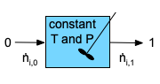
Quantities of Interest: \(k_0\), \(k_{0,CI,l}\), \(k_{0,CI,u}\), \(E\), \(E_{CI,l}\), \(E_{CI,u}\), \(R^2\), \(\underline{C}_{Y,1,model}\) vs. \(\underline{C}_{Y,1}\) (as a parity plot), and \(\underline{\epsilon}_{expt}\) vs. \(\underline{T}\), vs. \(\underline{\dot{V}}\), vs. \(\underline{C}_{A,0}\), vs. \(\underline{C}_{B,0}\), vs. \(\underline{C}_{Y,0}\), and vs. \(\underline{C}_{Z,0}\) (as residuals plots).
Given and Known Constants: \(V=100 \text{ cm}^3\).
Adjusted Experimental Inputs: \(\underline{T}\), \(\underline{\dot{V}}\), \(\underline{C}_{A,0}\), \(\underline{C}_{B,0}\), \(\underline{C}_{Y,0}\), and \(\underline{C}_{Z,0}\).
Experimental Response: \(\underline{C}_{Y,1}\).
20.5.1.2 Mathematical Formulation of the Analysis
Click Here to See What an Expert Might be Thinking at this Point
I know that I’ll need an isothermal, steady-state CSTR model to analyze the data, so I’ll develop that first. Because the temperature in each experiment is constant and known, I can solve the CSTR mole balances independently of any energy balances. Furthermore, I can calculate everything I need using only the mole balances, so for this analysis the reactor design equations will consist of a mole balance on each reagent present in the system.
The general form of the steady-state CSTR mole balance is given in Equation 6.31, but here there is only one reaction occurring, so the summation over the reactions reduces to a single term and there isn’t a need to index the reactions. I’ll be solving the design equations numerically, so I’ll write them as residuals expressions.
\[ 0 = \epsilon = \dot{n}_{i,0} - \dot{n}_{i,1} + \nu_i r V \]
I’ll be solving the design equations to find the outlet molar flow rates of the reagents. To do so numerically I’ll need to provide guesses for those unknowns and a residuals function.
I will use the experimental response for each experiment to generate a guess for the design equation unknowns (the outlet molar flow rates of the reagents). To do so I’ll calculate the outlet molar flow rate of Y from the measured outlet concentration of Y. From that I can calculate the apparent extent of reaction, and then the outlet molar flow rates of the other reagents.
Design Equations
\[ 0 = \epsilon_1 = \dot{n}_{A,0} - \dot{n}_{A,1} - rV \tag{3} \]
\[ 0 = \epsilon_2 = \dot{n}_{B,0} - \dot{n}_{B,1} - rV \tag{4} \]
\[ 0 = \epsilon_3 = \dot{n}_{Y,0} - \dot{n}_{Y,1} + rV \tag{5} \]
\[ 0 = \epsilon_4 = \dot{n}_{Z,0} - \dot{n}_{Z,1} + rV \tag{6} \]
Initial Guesses for the Design Equations Solution
\[ \dot{n}_{Y,1,guess} = C_{Y,1} \dot{V} \tag{7} \]
\[ \dot{n}_{Y,1,guess} = \dot{n}_{Y,0} + \dot{\xi}_{guess} \qquad \Rightarrow \qquad \dot{\xi}_{guess} = \dot{n}_{Y,1,guess} - \dot{n}_{Y,0} \tag{8} \]
\[ \dot{n}_{A,1,guess} = \dot{n}_{A,0} - \dot{\xi}_{guess} \tag{9} \]
\[ \dot{n}_{B,1,guess} = \dot{n}_{B,0} - \dot{\xi}_{guess} \tag{10} \]
\[ \dot{n}_{Z,1,guess} = \dot{n}_{Z,0} + \dot{\xi}_{guess} \tag{11} \]
Click Here to See What an Expert Might be Thinking at this Point
I will need to write the residuals function. Because it will be called by the ATE solver, it must have values for each of the ATE unknowns as its only arguments and it must return the corresponding values of the ATE residuals, \(\epsilon_1\) through \(\epsilon_4\). The arguments and the given and known constants from the assignment summary will be available within the residuals function.
Before the ATE residuals can be calculated, any other unknown quantities appearing in the design equations must be calculated. In the present case, the only known quantity in the design equations is \(V\), so the inlet molar flow rates of the four reagents and the rate must be calculated. The inlet molar flow rates can be found from the inlet concentrations and the inlet volumetric flow rate, but those vary from one experiment to the next, so they will need to be made available to the residuals function.
The rate can be calculated using equation (2), but that requires \(k\), \(C_A\), and \(C_B\). The concentrations in the rate expression can be calculated using the defining equation for concentration, but that again requires the volumetric flow rate. The rate coefficient can be calculated using the Arrhenius expression, but that, in turn, requires the pre-exponential factor, activation energy, and temperature. The pre-exponential factor and activation energy will be changing as the response model is being fit to the data, and, like the inlet molar flow rates and the volumetric flow rate, the temperature will change from experiment to experiment. Therefore \(k_0\), \(E\), and \(T\) will need to be made available to the residuals function, too.
Residuals Function
Arguments: \(\dot{n}_{A,1}\), \(\dot{n}_{B,1}\), \(\dot{n}_{Y,1}\), and \(\dot{n}_{Z,1}\).
Returns: \(\epsilon_1\), \(\epsilon_2\), \(\epsilon_3\), and \(\epsilon_4\).
Must be Available: \(T\), \(\dot{V}\), \(C_{A,0}\), \(C_{B,0}\), \(C_{Y,0}\), \(C_{Z,0}\), \(k_0\), and \(E\).
Algorithm:
\[ \dot{n}_{A,0} = C_{A,0}\dot{V} \tag{12} \]
\[ \dot{n}_{B,0} = C_{B,0}\dot{V} \tag{13} \]
\[ \dot{n}_{Y,0} = C_{Y,0}\dot{V} \tag{14} \]
\[ \dot{n}_{Z,0} = C_{Z,0}\dot{V} \tag{15} \]
\[ C_{A,1} = \frac{\dot{n}_{A,1}}{\dot{V}} \tag{16} \]
\[ C_{B,1} = \frac{\dot{n}_{B,1}}{\dot{V}} \tag{17} \]
\[ k = k_0 \exp{\left(\frac{-E}{RT}\right)} \tag{18} \]
\[ r = kC_{A,1}C_{B,1} \tag{2} \]
\[ \epsilon_1 = \dot{n}_{A,0} - \dot{n}_{A,1} - rV \tag{3} \]
\[ \epsilon_2 = \dot{n}_{B,0} - \dot{n}_{B,1} - rV \tag{4} \]
\[ \epsilon_3 = \dot{n}_{Y,0} - \dot{n}_{Y,1} + rV \tag{5} \]
\[ \epsilon_4 = \dot{n}_{Z,0} - \dot{n}_{Z,1} + rV \tag{6} \]
Click Here to See What an Expert Might be Thinking at this Point
The last thing I need to complete the steady-state CSTR model is a function that solves the design equations. I’ll use an ATE solver to solve the design equations, so I’ll need to provide it with the guesses for the ATE unknowns and the residuals function above.
The model will be solved for each experiment and for different rate expression parameters. Therefore, I will pass the rate expression parameters, the adjusted experimental inputs for the experiment being analyzed, and the measured response for the experiment being analyzed as arguments. By doing so, the initial guesses for the outlet molar flow rates (the design equation unknowns) can be calculated as described above. The CSTR model function will then need to make the rate expression parameters and the adjusted experimental inputs available to the residuals function. Then all it needs to do is call an ATE solver to solve the design equations.
Being ATEs, he design equations might have multiple solutions. Hopefully by using guesses that were calculated from the measured response, the ATE solver will find the desired solution.
CSTR Model Function
Arguments: \(T\), \(\dot{V}\), \(C_{A,0}\), \(C_{B,0}\), \(C_{Y,0}\), \(C_{Z,0}\), \(C_{Y,1}\), \(k_0\), and \(E\).
Returns: \(\dot{n}_{A,1}\), \(\dot{n}_{B,1}\), \(\dot{n}_{Y,1}\), and \(\dot{n}_{Z,1}\).
Algorithm:
- Make \(T\), \(\dot{V}\), \(C_{A,0}\), \(C_{B,0}\), \(C_{Y,0}\), \(C_{Z,0}\), \(k_0\), and \(E\) available to the residuals function.
- Calculate initial guesses for the ATE unknowns using equations (7) - (11).
- Get and return \(\dot{n}_{A,1}\), \(\dot{n}_{B,1}\), \(\dot{n}_{Y,1}\), and \(\dot{n}_{Z,1}\) by calling an ATE solver passing the initial guesses and residuals function as argument.
Click Here to See What an Expert Might be Thinking at this Point
The quantities of interest are the parameter estimates, the parameter uncertainties, the coefficient of determination, the full set of model-predicted responses, and the full set of experiment residuals. The parameter estimates, parameter uncertainties, and coefficient of determination will be found by fitting a predicted responses model to the experimental data.
The CSTR model cannot be fit to the experimental data directly because it does not yield a predicted value of the response, \(C_{A,1,model}\). Instead, I’ll use it to generate a predicted responses function. The predicted responses function will be called by a numerical fitting function. I will need to write it recognizing that it must receive the rate expression parameters (\(k_0\) and \(E\)) and the full set of adjusted experimental inputs (\(\underline{T}\), \(\underline{\dot{V}}\), \(\underline{C}_{A,0}\), \(\underline{C}_{B,0}\), \(\underline{C}_{Y,0}\), and \(\underline{C}_{Z,0}\)) as its only arguments. It must return the full set of model-predicted responses (\(\underline{C}_{Y,1,model}\)) and nothing else. Because the measured response for the experiment being modeled is one of the arguments to the CSTR model function, the measured responses need to be made available to the predicted responses function.
All that the predicted responses function needs to do is go through the experiments one by one. For each one it simply needs to extract the adjusted inputs and measured response for that experiment from the full sets and call the CSTR model function. The CSTR model function will solve the design equations and return the outlet molar flow rates of the reagents. From those and the volumetric flow rate, the outlet concentration of Y, the response, can be calculated. After it goes through all of the experiments it can then return the full set of model-predicted responses.
Predicted Responses Function
Arguments: \(k_0\), \(E\), \(\underline{T}\), \(\underline{\dot{V}}\), \(\underline{C}_{A,0}\), \(\underline{C}_{B,0}\), \(\underline{C}_{Y,0}\), and \(\underline{C}_{Z,0}\)
Returns: \(\underline{C}_{Y,1,model}\)
Must be Available: \(\underline{C}_{Y,1}\)
Algorithm:
For each experiment in the data set
Extract \(T\), \(\dot{V}\), \(C_{A,0}\), \(C_{B,0}\), \(C_{Y,0}\), \(C_{Z,0}\), and \(C_{Y,1}\) for that experiment from the full data sets.
Get \(\dot{n}_{A,1}\), \(\dot{n}_{B,1}\), \(\dot{n}_{Y,1}\), and \(\dot{n}_{Z,1}\) by calling the CSTR model function, passing the rate expression parameters, adjusted inputs for the experiment and measured response for the experiment as arguments.
Calculate the model-predicted response.
\[ C_{Y,1,model} = \frac{\dot{n}_{Y,1}}{\dot{V}} \tag{19} \]
- Return the full set of model-predicted responses, \(\underline{C}_{Y,1,model}\).
Click Here to See What an Expert Might be Thinking at this Point
Now that I have a model that predicts the responses for the experiments, I need to fit it to the experimental data. I’ll do that using a numerical fitting function. The fitting function will require four things as arguments: (1) guesses for the rate expression parameters, (2) the set of adjusted inputs for all of the experiments, (3) the set of experimental responses for all of the experiments, and (4) the predicted responses function above.
Assuming it is successful, the numerical fitting function will return estimates for the rate expression parameters, \(k_0\) and \(E\), estimates for the upper and lower limits of their 95% confidence intervals, \(k_{0,CI,l}\), \(k_{0,CI,u}\), \(E_{CI,l}\), and \(E_{CI,u}\), and the coefficient of determination, \(R^2\).
I can use the estimated rate expression parameters to calculate the model-predicted responses, and I can use them to calculate the experiment residuals. Then I can generate a parity plot and residuals plots.
Parameter Estimation
- Make an initial guess for the parameters (\(k_{0,guess}\) and \(E_{guess}\))
- Get \(k_0\), \(k_{0,CI,l}\), \(k_{0,CI,u}\), \(E\), \(E_{CI,l}\), \(E_{CI,u}\), and \(R^2\) by calling a numerical fitting function, passing the guess for the parameters, the full set of adjusted experimental inputs, the full set of measured responses, and the predicted responses function as arguments.
Assessment Graphslist
- Get \(\underline{C}_{Y,1,model}\) by calling the predicted responses function passing the estimated parameters and the full set of adjusted inputs as arguments.
- Calculate the experiment residuals.
\[ \underline{\epsilon}_{expt} = \underline{C}_{Y,1} - \underline{C}_{Y,1,model} \tag{19} \]
- Generate a parity plot showing \(\underline{C}_{Y,1}\) vs. \(\underline{C}_{Y,1,model}\).
- Generate residuals plots showing \(\underline{\epsilon}_{expt}\) vs. \(\underline{T}\), vs. \(\underline{\dot{V}}\), vs. \(\underline{C}_{A,0}\), vs. \(\underline{C}_{B,0}\), vs. \(\underline{C}_{Y,0}\), and vs. \(\underline{C}_{Z,0}\).
- Read the adjusted experimental inputs and the experimental responses from the file, reb_20_5_1_data.csv.
- Make the set of measured responses available to the predicted responses function.
- Perform the parameter estimation and assessment graphs calculations described above.
- Display the results and/or save them to a file.
20.5.1.3 Results and Discussion
The calculations were performed as described, except that the base-10 log of \(k\) was estimated (see Example 19.5.1), and the results are shown in Table 20.2.
| k0 | 8.72 x 106 L mol-1 min-1, 95% CI [4.61 x 106, 1.65 x 107] |
| E | 9.92 kcal mol-1, 95% CI [9.52, 10.3] |
| R2 | 0.993 |
The estimated rate coefficient was used to calculate the model-predicted response for each experiment, and that was used to calculate the residual for each experiment. The results were then used to generate the parity plot in Figure 20.2 and residuals plots shown in Figure 20.3.
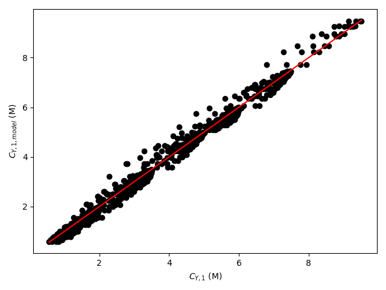
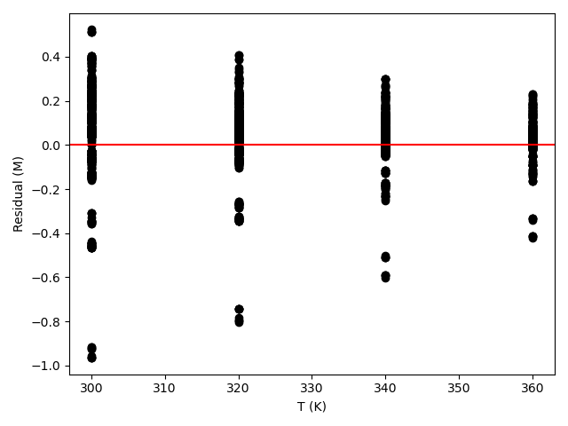
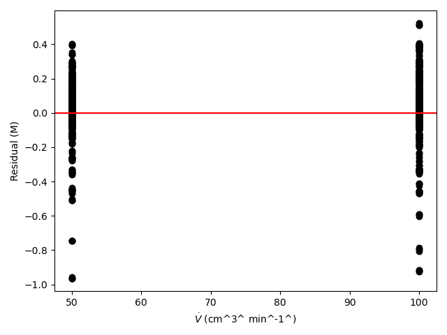
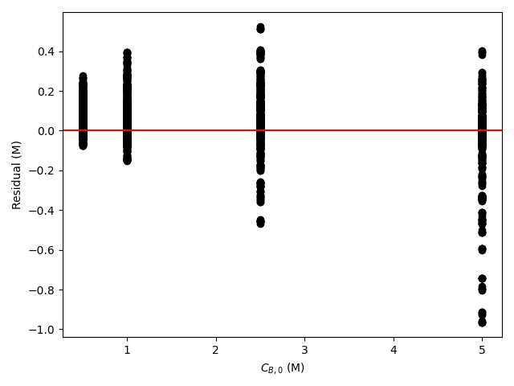
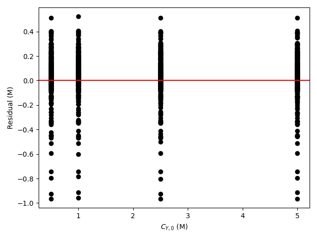
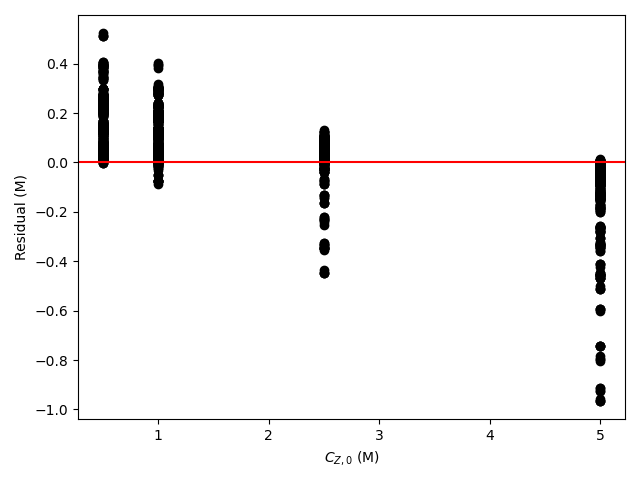
Click Here to See What an Expert Might be Thinking at this Point
The 95% confidence interval for \(k_0\), 4.61 x 106 to 1.65 x 107 L mol-1 min-1, is roughly half to double its estimated value, 8.72 x 106 L mol-1 min-1. The 95% confidence interval for \(E\) is much narrower. There is some scatter apparent in the parity plot, and the coefficient of determination is 0.993. These factors suggest that the rate expression is reasonably accurate. The residuals plots for \(T\), \(\dot{V}\) and \(C_Y\) show random deviations of the residuals about zero, too. However, in the residuals plots for \(C_A\) and \(C_B\) the residuals at low concentration do not scatter equally about zero. The residuals for \(C_Z\) show a definite trend, decreasing steadily as \(C_Z\) increases. This suggests that the reaction rate may have some functional dependence on the concentration of Z that is not captured in the rate expression.
Assessment
The rate expression is reasonably accurate, but there are indications that the it may not fully capture the dependence of the rate on the concentration of reagent Z. Rate expressions that include a functional dependence on the concentration of Z should be postulated and assessed to determine whether they can represent the experimental results more accurately.
20.5.2 Analysis of Data for a Gas-Phase Reaction with Change of Total Moles
Preliminary experiments have indicated that gas-phase reaction (1) is irreversible and that the rate is not affected by the concentration of the product Z. To generate kinetics data, experiments were performed at three temperatures. An ideal CSTR operating at 3 atm was used for all experiments. The feed in every experiment contained only reagents A and B. The temperature, space time, and mole fraction of A in the feed were varied from experiment to experiment, and the outlet concentration of Z was measured. The first few data are presented below. Use the full data set, linked below, to assess the accuracy of the rate expression shown in equation (2) where the power-law reaction orders, \(\alpha_A\) and \(\alpha_B\), must be estimated along with the pre-exponential factor and activation energy for the rate coefficient, \(k\).
\[ A + B \rightarrow Z \tag{1} \]
\[ r = kP_A^{\alpha_A} P_B^{\alpha_B} \tag{2} \]
The first few data points are shown in Table 20.3. The full data set is available in the file reb_20_5_2_data.csv.
| T (°C) | \(\tau\) (s) | yA,0 | CZ,1 (mmol L-1) |
|---|---|---|---|
| 440 | 30 | 0.1 | 0.41 |
| 440 | 30 | 0.2 | 0.61 |
| 440 | 30 | 0.3 | 1.42 |
| 440 | 30 | 0.4 | 1.64 |
| 440 | 30 | 0.5 | 2.21 |
| 440 | 30 | 0.6 | 2.43 |
Click Here to See What an Expert Might be Thinking at this Point
The assignment narrative describes reactor experiments, provides the data generated in those experiments, and asks me to use them to assess the accuracy of a proposed rate expression. Those are distinguishing characteristics of a kinetics data analysis assignment.
I’ll begin by summarizing the assignment. I’ll assign an appropriate variable symbol to represent each of the quantities provided in the assignment. While doing so I will use a subscripted “0” to denote a quantity value at the inlet to the reactor and a subscripted “1” to denote one at the outlet. I’ll use subscripted “CI,l” and “CI,u” to denote values that are the lower or upper limit of a 95% confidence interval. I’ll underline a variable symbol if it represents a set of values (i. e. a vector).
In the experiments for this assignment, a CSTR that operated at steady-state was used. The adjusted experimental inputs were the temperature, space time, and feed mole fraction of reagent A, and the measured response was the outlet concentration of Z.
In order to assess the accuracy of the rate expression I will need to estimate the parameters in the rate expression and the uncertainty in the estimates. I’ll also calculate the coefficient of determination. A parity plot and residuals plots also will help me assess the accuracy of the proposed rate expression. To make those plots, I’ll need the model-predicted responses and the experiment residuals for the experiments. I’ll list all of these as the quantities of interest.
No extensive quantities were provided in the assignment narrative, so I can select one extensive variable as the basis for the calculations. I’ll use the reactor volume as the basis and include it among the given and known constants.
20.5.2.1 Assignment Summary
Reactor System: Steady-state, isothermal, gas-phase CSTR
Reactor Schematic:
Adjusted Experimental Inputs: \(\underline{T}\), \(\underline{\tau}\) and \(\underline{y}_{A,0}\)
Experimental Response: \(\underline{C}_{Z,1}\)
Quantities of Interest: \(k_0\), \(k_{0,CI,l}\), \(k_{0,CI,u}\), \(E\), \(E_{CI,l}\), \(E_{CI,u}\), \(\alpha_A\), \(\alpha_{A,CI,l}\), \(\alpha_{A,CI,u}\), \(\alpha_B\), \(\alpha_{B,CI,l}\), \(\alpha_{B,CI,u}\), \(R^2\), \(\underline{C}_{Z,1,model}\), \(\underline{\epsilon}_{expt}\).
Given and Known Constants: \(P\) = 3 atm, \(\dot{n}_{Z,0}\) = 0, \(R\) = 0.08206 L atm mol-1 K-1, and \(V\) = 1.0 L (basis).
Click Here to See What an Expert Might be Thinking at this Point
This is a kinetics data analysis assignment, and I know that to complete it I will need a predicted response model that relates the rate expression parameters and the adjusted experimental inputs for any one experiment to the measured response from that experiment. I can begin to generate the predicted response model by generating a model for the CSTR used in the experiments. The CSTR model relates the rate expression parameters and the adjusted experimental inputs to the outlet molar flow rates.
To generate the predicted responses model I can simply use the CSTR model to relate the rate expression parameters and the adjusted experimental inputs to the outlet molar flow rates, and then add equations to calcuate the response from the outlet molar flow rates.
Once I have a predicted response model, I can fit it to the experimental data to get estimates and uncertainties for the parameters and the coefficient of determination. For the rate expression given here the rate expression parameters are the pre-exponential factor, activation energy, reaction order in A, and reaction order in B. Using the estimated parameters in the predicted responses model will generate the model-predicated responses for the experiments, and those can be used to calculate the experiment residuals. That will allow me to generate a parity plot and residuals plot.
To complete the assignment I can assess the accuracy of the rate expression by noting that for an accurate model the following criteria are satisfied:
- The coefficient of determination is close to 1.0.
- The points in the parity plot are close to the parity line.
- The points in the residuals plots scatter randomly about zero with no apparent trends or systematic deviations.
- The lower and upper limits of the 95% confidence interval for most, if not all, of the rate expression parameters close to their estimated values.
- Develop the CSTR model.
- Using the CSTR model develop a predicted response model.
- Fit the predicted response model to the experimental data.
- Generate a parity plot and residuals plots.
- Assess the accuracy of the rate expression.
20.5.2.2 Mathematical Formulation of the Analysis
Click Here to See What an Expert Might be Thinking at this Point
To start I’ll formulate the steady-state CSTR model. To do so I need to generate the reactor design equations for the reactor. They will be solved numerically to find the outlet molar flow rates of the reagents. In kinetics experiments the reactor operates at a known temperature, and as a result the mole balance design equations can be solved independently of any energy balances. I can calculate the outlet molar flow rates of the reagents using just the mole balances, to they are the only design equations I need.
The general form of the CSTR mole balances is given in Equation 6.24. Here the reactor operates at steady-state, so the time derivatives are all equal to zero. There is only one reaction taking place in the reactor so the summation over the reactions reduces to a single term and it isn’t necessary to index the reaction. So for this assignment the mole balance on each reagent in the system will take the following form.
\[ 0 = \epsilon = \dot{n}_{i,0} - \dot{n}_{i,1} + \nu_i r V \]
Here, the design equations are a set of ATEs. I will solve numerically for the outlet molar flow rates of the reagents, so the general equation above has been written in the form of a residual expression. To use an ATE solver to solve the design equations numerically for the outlet molar flow rates of the reagents, I will need to provide an initial guess for those outlet molar flow rates. In a kinetics data analysis assignment like this, I can use the measured response from an experiment to make an initial guess for the outlet molar flow rates in that experiment.
In this assignment the measured response was the outlet concentration of Z. Since all I need is a guess, I can ignore the change in the volumetric flow rate and calculate the outlet molar flow of Z as the measured outlet concentration times the inlet volumetric flow rate. The inlet volumetric flow rate can be calculated using the space time and the volume. After guessing the outlet molar flow rate of Z, I can calculate the extent of reaction. Finally, I can calculate the inlet molar flow rates of A and B using the ideal gas law and use them together with the extent of reaction to calculate their outlet molar flow rates.
Design Equations
\[ 0 = \epsilon_1 = \dot{n}_{A,0} - \dot{n}_{A,1} - rV \tag{3} \]
\[ 0 = \epsilon_2 = \dot{n}_{B,0} - \dot{n}_{B,1} - rV \tag{4} \]
\[ 0 = \epsilon_3 = - \dot{n}_{Z,1} + rV \tag{5} \]
Guesses for the Design Equations Unknowns
\[ \dot{V}_0 = \frac{V}{\tau} \tag{6} \]
\[ \dot{n}_{A,0} = y_{A,0}\frac{P \dot{V}_0}{RT} \tag{7} \]
\[ \dot{n}_{B,0} = \left(1-y_{A,0}\right) \frac{P \dot{V}_0}{RT} \tag{8} \]
\[ \dot{n}_{Z,1} \approx \dot{V}_0 C_{Z,1} = \dot{n}_{Z,1,guess} \tag{9} \]
\[ \dot{\xi} = \dot{n}_{Z,1,guess} -\dot{n}_{Z,0} \tag{10} \]
\[ \dot{n}_{A,1,guess} = \dot{n}_{A,0} - \dot{\xi}\tag{11} \]
\[ \dot{n}_{B,1,guess} = \dot{n}_{B,0} - \dot{\xi} \tag{12} \]
Click Here to See What an Expert Might be Thinking at this Point
In addition to the guesses for the design equations unknowns, I will need to write a residuals function and provide it to the ATE solver (see Section F.5.1.1.2). The residuals function will be called by an ATE solver from a mathematics software package. The mathematics software package assumes that the only arguments to the residuals function are the ATE unknowns and that the residuals function returns the ATE residuals and nothing else. I can, of course, use the known constants given the assignment narrative within the residuals function, but if it requires any other input, I will need to provide that by some means other than as an argument.
The purpose of the residuals function is to calculate the design equation residuals, equations (3) - (5). Of the quantities appearing in the design equations, \(\dot{n}_{A,1}\), \(V\), \(\dot{n}_{B,1}\), and \(\dot{n}_{Z,1}\) are either arguments to the residuals function (the outlet molar flow rates) or known constants. \(\dot{n}_{A,0}\), \(r\), \(\dot{n}_{B,0}\), and \(\dot{n}_{Z,0}\) are not known and must either be calculated or made available within the residuals function. The inlet molar flow rates can be calculated as was done in equations (6) through (8), but the space time, inlet mole fraction of A and temperature will be different depending upon the experiment being analyzed. As such, those quantities cannot be calculated and must be made available to the residuals function before it is called.
The rate can be calculated using the given rate expression, equation (2), but that requires \(k\), \(P_A\), \(P_B\), \(\alpha_A\), and \(\alpha_B\). The Arrhenius expression, below, can be used to calculate \(k\), but that requires \(k_0\) and \(E\) (assuming \(T\) has been made available to enable calculation of the inlet molar flow rates as just mentioned). The rate expression parameters, \(k_0\), \(E\), \(\alpha_A\), and \(\alpha_B\) will be changing during the fitting process, so they cannot be calculated and must be made available to the residuals function before it is called.
\[ k = k_0 \exp{ \left( \frac{-E}{RT} \right)} \]
The partial pressures of A and B can be calculated from the total pressure and their mole fractions, below. Once \(T\), \(\tau\), \(y_{A,0}\), \(k_0\), \(E\), \(\alpha_A\), and \(\alpha_B\) have been made available and \(\dot{n}_{A,0}\), \(r\), \(\dot{n}_{B,0}\), and \(\dot{n}_{Z,0}\) have been calculated, the residuals can be evaluated using the design equations (3) - (5).
\[ P_i = \frac{\dot{n}_{i,1} P}{\dot{n}_{A,1} + \dot{n}_{B,1} + \dot{n}_{Z,1}} \]
Residuals Function
Arguments: \(\dot{n}_{A,1}\), \(\dot{n}_{B,1}\), and \(\dot{n}_{Z,1}\)
Returns: \(\epsilon_1\), \(\epsilon_2\), and \(\epsilon_3\)
Must be Available: \(T\), \(\tau\), \(y_{A,0}\), \(k_0\), \(E\), \(\alpha_A\), and \(\alpha_B\)
Algorithm:
\[ \dot{V}_0 = \frac{V}{\tau} \tag{6} \]
\[ \dot{n}_{A,0} = y_{A,0}\frac{P \dot{V}_0}{RT} \tag{7} \]
\[ \dot{n}_{B,0} = \left(1-y_{A,0}\right) \frac{P \dot{V}_0}{RT} \tag{8} \]
\[ P_A = \frac{\dot{n}_{A,1}P}{\left(\dot{n}_{A,1} + \dot{n}_{B,1} + \dot{n}_{Z,1}\right)} \tag{13} \]
\[ P_B = \frac{\dot{n}_{B,1}P}{\left(\dot{n}_{A,1} + \dot{n}_{B,1} + \dot{n}_{Z,1}\right)} \tag{14} \]
\[ k = k_0 \exp{ \left( \frac{-E}{RT} \right)} \tag{15} \]
\[ r = kP_A^{\alpha_A}P_B^{\alpha_B} \tag{2} \]
\[ \epsilon_1 = \dot{n}_{A,0} - \dot{n}_{A,1} - rV \tag{3} \]
\[ \epsilon_2 = \dot{n}_{B,0} - \dot{n}_{B,1} - rV \tag{4} \]
\[ \epsilon_3 = - \dot{n}_{Z,1} + rV \tag{5} \]
Click Here to See What an Expert Might be Thinking at this Point
To complete the CSTR model, I will need to write a CSTR model function that solves the design equations numerically to find the outlet molar flow rates of the reagents. It will use an ATE solver to do so, and it will need to provide two things to the ATE solver: the guess for the ATE unknowns and the residuals function. When it is called, it should be passed the adjusted experimental inputs and the experimental response for the experiment being analyzed and the current rate expression parameters. It needs the adjusted inputs and response to calculate the guesses and it needs to make the adjusted inputs and the rate coefficient parameters available to the residuals function before passing the residuals function to the ATE solver.
After making the adjusted inputs and the rate coefficient parameters available to the residuals function all the CSTR model function needs to do is calculate the guesses and call the ATE solver. Assuming the solver is successful, it will return the outlet molar flow rates of the reagents.
CSTR Model Function
Arguments: \(T\), \(\tau\), \(y_{A,0}\), \(C_{Z,1}\), \(k_0\), \(E\), \(\alpha_A\), and \(\alpha_B\)
Returns: \(\dot{n}_{A,1}\), \(\dot{n}_{B,1}\), and \(\dot{n}_{Z,1}\).
Algorithm:
- Make \(T\), \(\tau\), \(y_{A,0}\), \(k_0\), \(E\), \(\alpha_A\), and \(\alpha_B\) available to the residuals function.
- Calculate the guesses for the design equations unknowns, equations (6) - (12).
- Get \(\dot{n}_{A,1}\), \(\dot{n}_{B,1}\), and \(\dot{n}_{Z,1}\) by calling an ATE solver passing the initial guesses and the CSTR residuals function as arguments.
Click Here to See What an Expert Might be Thinking at this Point
Having developed a model for the CSTR used in the experiments, my next task is to use it to develop a predicted response model that can be fit to the experimental data. The predicted response model must relate the measured response to the rate expression parameters and the adjusted experimental inputs. The CSTR model relates the outlet molar flow rates to the rate expression parameters and the adjusted experimental inputs, so all I need is equations that relate the outlet molar flow rates to the measured response.
The measured response is the outlet concentration of Z. By definition, it is equal to the outlet molar flow rate of Z divided by the outlet volumetric flow rate. A critical point to remember is that the inlet and outlet volumetric flow rates are not equal because the reaction causes a change in the total molar flow rate. It can be calculated using the ideal gas law and then the outlet concentration of Z can be calculated.
I will use a numerical fitting function from a mathematics or statistics software package to fit the predicted response model to the experimental data (see Section F.6). One of the things I will need to provide to it is a predicted responses function, that I must write. The predicted responses function will be called by the numerical fitting function, and it assumes that the only arguments to the predicted responses function are the adjusted experimental inputs and the rate expression parameters and that the predicted responses function returns the model predicted responses for all of the experiments and nothing else. As was the case for the residuals function, I can use the known constants given the assignment narrative within the predicted function, but if it requires any other input, I will need to provide that by some means other than as an argument.
Writing the predicted responses function is straightforward. It simply needs to go through the experiments one by one calling the CSTR model function and using the outlet molar flow rates it returns to calculate the model-predicted response, \(C_{Z,1}\). After doing this for each experiment, the full set of model-predicated responses can be returned.
In this assighment, the measured response for the experiment must also be provided as an argument when calling the CSTR model function. Since the measured responses are not passed to the predicted responses function as an argument, they must be provided to it by some other means.
Predicted Response
\[ \dot{V}_1 = \frac{\left(\dot{n}_{A,1} + \dot{n}_{B,1} + \dot{n}_{Z,1}\right)RT}{P} \tag{16} \]
\[ C_{Z,1,model} = \frac{\dot{n}_{Z,1}}{\dot{V}_1} \tag{17} \]
Predicted Responses Function
Arguments: \(k_0\), \(E\), \(\alpha_A\), \(\alpha_B\), \(\underline{T}\), \(\underline{\tau}\), and \(\underline{y}_{A,0}\).
Returns: \(\underline{C}_{Z,1,model}\)
Must be Available: \(\underline{C}_{Z,1}\)
Algorithm:
For each experiment in the data set:
Get \(\dot{n}_{A,1}\), \(\dot{n}_{B,1}\), and \(\dot{n}_{Z,1}\) by calling the CSTR model function passing \(T\), \(\tau\), \(y_{A,0}\), \(C_{Z,1}\), \(k_0\), \(E\), \(\alpha_A\), and \(\alpha_B\) as arguments.
Calculate the predicted response, equations (16) and (17).
Return \(\underline{C}_{Z,1,model}\).
Click Here to See What an Expert Might be Thinking at this Point
Now that I have generated the CSTR model function and the predicted responses function, most of the remaining tasks can be accomplished simply by making function calls. To estimate the rate expression parameters, parameter uncertainties and get the coefficient of determination, I simply need to make guesses for the rate expression the parameters and call the numerical fitting function. Once I’ve done that, all I need to do to generate the data for the parity and residuals plots is to call the predicted responses function using the final parameter estimates and then calculate the experiment residuals.
Define guesses, \(k_{0,guess}\), \(E_{guess}\), \(\alpha_{A,guess}\), and \(\alpha_{B,guess}\).
Get \(k_0\), \(k_{0,CI,l}\), \(k_{0,CI,u}\), \(E\), \(E_{CI,l}\), \(E_{CI,u}\), \(\alpha_A\), \(\alpha_{A,CI,l}\), \(\alpha_{A,CI,u}\), \(\alpha_B\), \(\alpha_{B,CI,l}\), \(\alpha_{B,CI,u}\), and \(R^2\) by calling a numerical fitting function, passing the guesses (\(k_{0,guess}\), \(E_{guess}\), \(\alpha_{A,guess}\), and \(\alpha_{B,guess}\)), the adjusted experimental inputs (\(\underline{T}\), \(\underline{\tau}\), and \(\underline{y}_{A,0}\)), the experimental responses (\(\underline{C}_{Z,1}\)), and the predicted responses function as arguments.
Get \(\underline{C}_{Z,1,model}\) by calling the predicted responses function, passing the estimated parameters (\(k_0\), \(E\), \(\alpha_A\), and \(\alpha_B\)) and the adjusted experimental inputs (\(\underline{T}\), \(\underline{\tau}\), and \(\underline{y}_{A,0}\)) as arguments.
Calculate the experiment residuals.
\[ \underline{\epsilon}_{expt} = \underline{C}_{Z,1,model} - \underline{C}_{Z,1} \tag{18} \]
Generate a parity plot showing \(\underline{C}_{Z,1,model}\) vs. \(\underline{C}_{Z,1}\) as points and \(\underline{C}_{Z,1,model}\) = \(\underline{C}_{Z,1}\) as the parity line.
Generate residuals plots showing \(\underline{\epsilon}_{expt}\) vs. \(\underline{T}\), vs. \(\underline{\tau}\), and vs. \(\underline{y}_{A,0}\).
Click Here to See What an Expert Might be Thinking at this Point
Now I have everything I need to perform the calculations. In this assignment it is necessary to make some quantities available to the residuals function and to make the measured responses available to the predicted responses function. I have taken care of making the necessary quantities available to the residuals function within the CSTR model function. The measured responses from the experiments are constants that will never change during the analysis. Therefore, they can be made available to the predicted responses function as soon as they are read in from the data file.
Read the adjusted experimental inputs and the experimental responses from the file, reb_20_5_2_data.csv.
Make the experimental responses (\(\underline{C}_{Z,1}\)) available to the predicted responses function.
Calculate the parameter estimates and statistics and generate the assessment graphs as described above.
Display the results and/or save them to a file.
20.5.2.3 Results, Analysis, and Discussion
The calculations were performed as described above except that the base-10 log of \(k_0\) was estimated instead of estimating \(k_0\) directly (see Section 18.6.2). The fitting results are shown in Table 20.4. The parity plot is shown in Figure 20.5 and the residuals plots are shown in Figure 20.6.
| k0 | 6.6 x 103 mol L-1 atm-2 s-1, 95% CI [3.31 x 103, 1.32 x 104] |
| E | 113 kJ mol-1, 95% CI [109, 117] |
| \(\alpha_A\) | 1.39 , 95% CI [1.35, 1.44] |
| \(\alpha_B\) | 0.595 , 95% CI [0.57, 0.619] |
| R2 | 0.995 |
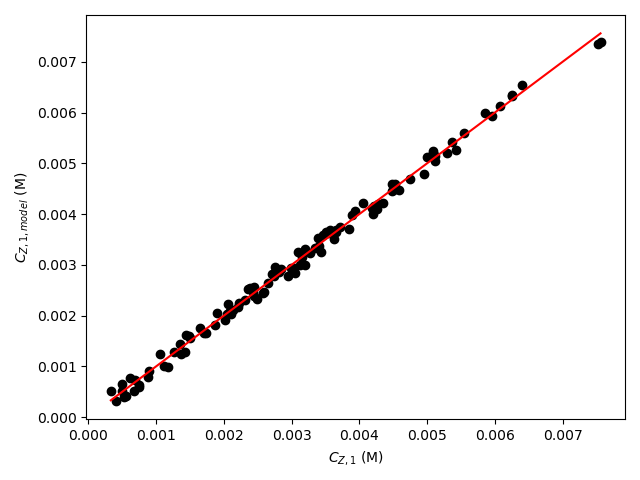
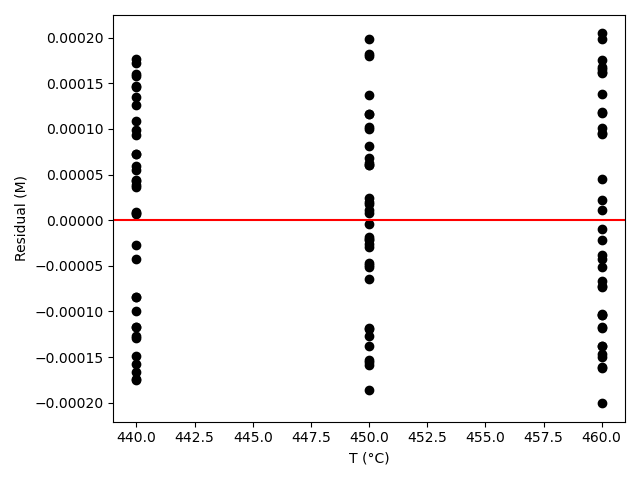
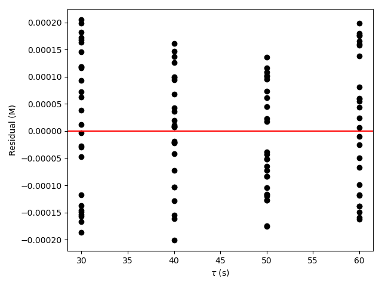
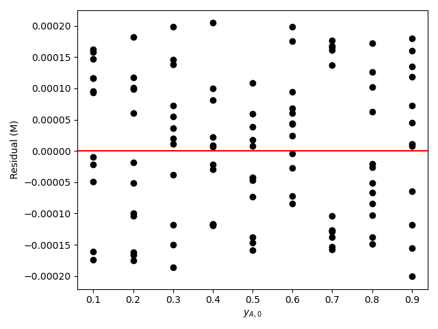
Click Here to See What an Expert Might be Thinking at this Point
The deviations of the data points from the line in the parity plot are small, the deviations of the residuals about zero are random with no apparent trends, the coefficient of determination is close to 1, and the upper and lower limits of the 95% confidence intervals for \(E\), \(\alpha_A\), and \(\alpha_B\) are close to the estimated parameter value. The uncertainty in \(k_0\) is slightly greater, but still acceptable. This indicates that the rate expression is acceptabley accurate.
When used with the rate expression parameters shown in Table 20.4, the accuracy of the proposed rate expression in describing the concentration and temperature dependence of the rate, within the range of concentrations and temperatures investigated, is acceptable.
20.5.3 Analysis of Data for a Reversible Reaction
The liquid-phase disproportionation of reagent A, reaction (1), is reversible. Kinetics data were generated in a 3 gal CSTR by varying the temperature, volumetric flow rate and feed concentrations of reagents A, Y, and Z from experiment to experiment. In each experiment the outlet concentration of reagent A was measured. Use the resulting data, linked below, it to assess the accuracy of the rate expression shown in equation (2). Note that thermodynamic data to calculate the equilibrium constant for reaction (1) are not available, so both the forward and reverse rate coefficients in the rate expression must be estimated from the experimental data.
\[ A \leftrightarrows Y + Z \tag{1} \]
\[ r = k_fC_A^2 - k_rC_YC_Z \tag{2} \]
The first few data points are shown in Table 20.5. The full data set is available in the file reb_20_5_3_data.csv.
| T (°F) | \(\dot{V}\) (gal min-1) | CA,0 (lbmol gal-1) | CY,0 (lbmol gal-1) | CZ,0 (lbmol gal-1) | CA,1 (lbmol gal-1) |
|---|---|---|---|---|---|
| 90 | 0.5 | 0.01 | 0.00 | 0.00 | 0.0070 |
| 90 | 0.5 | 0.01 | 0.00 | 0.01 | 0.0072 |
| 90 | 0.5 | 0.01 | 0.00 | 0.02 | 0.0071 |
| 90 | 0.5 | 0.01 | 0.00 | 0.03 | 0.0071 |
| 90 | 0.5 | 0.01 | 0.01 | 0.00 | 0.0067 |
| 90 | 0.5 | 0.01 | 0.01 | 0.01 | 0.0082 |
Click Here to See What an Expert Might be Thinking at this Point
The assignment narrative describes reactor experiments, provides the data generated in those experiments, and asks me to use them to assess the accuracy of a proposed rate expression. Those are distinguishing characteristics of a kinetics data analysis assignment.
I’ll begin by summarizing the assignment. I’ll assign an appropriate variable symbol to represent each of the quantities provided in the assignment. While doing so I will use a subscripted “0” to denote a quantity value at the inlet to the reactor and a subscripted “1” to denote one at the outlet. I’ll use subscripted “CI,l” and “CI,u” to denote values that are the lower or upper limit of a 95% confidence interval. I’ll underline a variable symbol if it represents a set of values (i. e. a vector).
In the experiments for this assignment, a CSTR that operated at steady-state was used. The adjusted experimental inputs were the temperature, volumetric flow rate, and feed concentrations of reagents A, Y, and Z, and the measured response was the outlet concentration of A.
In order to assess the accuracy of the rate expression I will need to estimate the parameters in the rate expression and the uncertainty in the estimates. For the rate expression given here, the rate expression parameters are the forward and reverse pre-exponential factors and the forward and reverse activation energies. I’ll also calculate the coefficient of determination. A parity plot and residuals plots also will help me assess the accuracy of the proposed rate expression. To make those plots, I’ll need the model-predicted responses and the experiment residuals for the experiments. I’ll list all of these as the quantities of interest.
The reacting fluid is a liquid, and I’ll assume it to be an ideal, incompressible mixture in which case the inlet and outlet volumetric flow rates will be equal. Therefore I will not use a subscript on the volumetric flow rate.
20.5.3.1 Assignment Summary
Reactor System: Steady-state, isothermal, liquid-phase CSTR
Reactor Schematic:
Adjusted Experimental Inputs: \(\underline{T}\), \(\underline{\dot{V}}\), \(\underline{C}_{A,0}\), \(\underline{C}_{Y,0}\), and \(\underline{C}_{Z,0}\).
Experimental Response: \(\underline{C}_{A,1}\)
Quantities of Interest: \(k_{0,f}\), \(k_{0,f,CI,l}\), \(k_{0,f,CI,u}\), \(E_f\), \(E_{f,CI,l}\), \(E_{f,CI,u}\), \(k_0,r\), \(k_{0,r,CI,l}\), \(k_{0,r,CI,u}\), \(E_r\), \(E_{r,CI,l}\), \(E_{r,CI,u}\), \(R^2\), \(\underline{C}_{A,1,model}\), \(\underline{\epsilon}_{expt}\).
Given and Known Constants: \(V\) = 3 gal and \(R\) = 1.987 BTR lbmol-1.
Click Here to See What an Expert Might be Thinking at this Point
This is a kinetics data analysis assignment, and I know that to complete it I will need a predicted response model that relates the rate expression parameters and the adjusted experimental inputs for any one experiment to the measured response from that experiment. I can begin to generate the predicted response model by generating a model for the CSTR used in the experiments. The CSTR model relates the rate expression parameters and the adjusted experimental inputs to the outlet molar flow rates.
To generate the predicted responses model I can simply use the CSTR model to relate the rate expression parameters and the adjusted experimental inputs to the outlet molar flow rates, and then add equations to calcuate the response from the outlet molar flow rates.
Once I have a predicted response model, I can fit it to the experimental data to get estimates and uncertainties for the parameters and the coefficient of determination. Using the estimated parameters in the predicted responses model will generate the model-predicated responses for the experiments, and those can be used to calculate the experiment residuals. That will allow me to generate a parity plot and residuals plot.
To complete the assignment I can assess the accuracy of the rate expression by noting that for an accurate model the following criteria are satisfied:
- The coefficient of determination is close to 1.0.
- The points in the parity plot are close to the parity line.
- The points in the residuals plots scatter randomly about zero with no apparent trends or systematic deviations.
- The lower and upper limits of the 95% confidence interval for most, if not all, of the rate expression parameters close to their estimated values.
- Develop the CSTR model.
- Using the CSTR model develop a predicted response model.
- Fit the predicted response model to the experimental data.
- Generate a parity plot and residuals plots.
- Assess the accuracy of the rate expression.
20.5.3.2 Mathematical Formulation of the Analysis
Click Here to See What an Expert Might be Thinking at this Point
To start I’ll formulate the steady-state CSTR model. To do so I need to generate the reactor design equations for the reactor. They will be solved numerically to find the outlet molar flow rates of the reagents. In kinetics experiments the reactor operates at a known temperature, and as a result the mole balance design equations can be solved independently of any energy balances. I can calculate the outlet molar flow rates of the reagents using just the mole balances, to they are the only design equations I need.
The general form of the CSTR mole balances is given in Equation 6.24. Here the reactor operates at steady-state, so the time derivatives are all equal to zero. There is only one reaction taking place in the reactor so the summation over the reactions reduces to a single term and it isn’t necessary to index the reaction. So for this assignment the mole balance on each reagent in the system will take the following form.
\[ 0 = \epsilon = \dot{n}_{i,0} - \dot{n}_{i,1} + \nu_i r V \]
Here, the design equations are a set of ATEs. I will solve them numerically for the outlet molar flow rates of the reagents, so the mole balance above has been written in the form of a residual expression. To solve them numerically using using an ATE solver, I will need to provide a guess for those outlet molar flow rates. In a kinetics data analysis assignment like this, I can use the measured response from an experiment to make an initial guess for the outlet molar flow rates in that experiment.
In this assignment the measured response was the outlet concentration of A. To generate guesses for the outlet molar flow rates I can calculate the outlet molar flow of A as the measured outlet concentration times the volumetric flow rate. The inlet volumetric flow rate of A is just the product of the volumetric flow rate and the inlet concentration of A. With that I can calculate the extent of reaction. Finally, I can calculate the inlet molar flow rates of Y and Z, and use them together with the extent of reaction to calculate their outlet molar flow rates.
Design Equations
\[ 0 = \epsilon_1 = \dot{n}_{A,0} - \dot{n}_{A,1} - rV \tag{3} \]
\[ 0 = \epsilon_2 = \dot{n}_{Y,0} - \dot{n}_{Y,1} + rV \tag{4} \]
\[ 0 = \epsilon_3 = \dot{n}_{Z,0} - \dot{n}_{Z,1} + rV \tag{5} \]
Guesses for the Design Equations Unknowns
\[ \dot{n}_{A,1,guess} = \dot{V}C_{A,1} \tag{6} \]
\[ \dot{n}_{A,0} = \dot{V}C_{A,0} \tag{7} \]
\[ \dot{n}_{A,1,guess} = \dot{n}_{A,0} - \dot{\xi} \qquad \Rightarrow \qquad \dot{\xi} = \dot{n}_{A,0} - \dot{n}_{A,1,guess} \tag{8} \]
\[ \dot{n}_{Y,0} = \dot{V}C_{Y,0} \tag{9} \]
\[ \dot{n}_{Z,0} = \dot{V}C_{Z,0} \tag{10} \]
\[ \dot{n}_{Y,1,guess} = \dot{n}_{Y,0} + \dot{\xi} \tag{11} \]
\[ \dot{n}_{Z,1,guess} = \dot{n}_{Z,0} + \dot{\xi} \tag{12} \]
Click Here to See What an Expert Might be Thinking at this Point
In addition to the guesses for the design equation unknowns, I will need to write a residuals function and provide it to the ATE solver (see Section F.5.1.1.2). The residuals function will be called by an ATE solver from a mathematics software package. The mathematics software package assumes that the only arguments to the residuals function are the ATE unknowns and that the residuals function returns the ATE residuals and nothing else. I can, of course, use the known constants given in the assignment narrative within the residuals function, but if it requires any other input, I will need to provide that by some means other than as an argument.
The purpose of the residuals function is to calculate the design equation residuals, equations (3) - (5). Of the quantities appearing in the design equations, \(\dot{n}_{A,1}\), \(V\), \(\dot{n}_{Y,1}\), and \(\dot{n}_{Z,1}\) are either arguments to the residuals function (the outlet molar flow rates) or known constants. \(\dot{n}_{A,0}\), \(r\), \(\dot{n}_{Y,0}\), and \(\dot{n}_{Z,0}\) are not known and must either be calculated or made available within the residuals function. The inlet molar flow rates can be calculated as was done in equations (7), (9), and (10), but the volumetric flow rate, and inlet concentrations of A, Y, and Z will be different depending upon the experiment being analyzed. As such, those quantities cannot be calculated and must be made available to the residuals function before it is called.
The rate can be calculated using the given rate expression, equation (2), but that requires \(k_f\), \(k_r\), \(C_{A,1}\), \(C_{Y,1}\), and \(C_{Z1}\). The Arrhenius expression, below, can be used to calculate \(k_f\) and \(k_r\), but that requires \(k_{0,f}\), \(E_f\), \(k_{0,r}\), \(E_r\), and \(T\). The rate expression parameters, \(k_{0,f}\), \(E_f\), \(k_{0,r}\), and \(E_r\) will be changing during the fitting process, so they cannot be calculated and must be made available to the residuals function before it is called. Similarly, the temperature will change depending upon which experiment is being analzyed, so it, too, must be made available to the residuals function.
\[ k = k_0 \exp{ \left( \frac{-E}{RT} \right)} \]
The concentrations of the reagents appearing in the rate expression can be calculated from outlet molar flow rates (which are the arguments to the residuals function) and volumetric flow rate. Once \(T\), \(\dot{V}\), \(C_{A,0}\), \(C_{Y,0}\), \(C_{Z,0}\), \(k_{0,f}\), \(E_f\), \(k_{0,r}\), and \(E_r\) have been made available and \(\dot{n}_{A,0}\), \(r\), \(\dot{n}_{Y,0}\), and \(\dot{n}_{Z,0}\) have been calculated, the residuals can be evaluated using the design equations (3) - (5).
\[ C_i = \frac{\dot{n}_{i,1}}{\dot{V}} \]
Residuals Function
Arguments: \(\dot{n}_{A,1}\), \(\dot{n}_{Y,1}\), and \(\dot{n}_{Z,1}\)
Returns: \(\epsilon_1\), \(\epsilon_2\), and \(\epsilon_3\)
Must be Available: \(T\), \(\dot{V}\), \(C_{A,0}\), \(C_{Y,0}\), \(C_{Z,0}\), \(k_{0,f}\), \(E_f\), \(k_{0,r}\), and \(E_r\)
Algorithm:
\[ \dot{n}_{A,0} = \dot{V}C_{A,0} \tag{7} \]
\[ \dot{n}_{Y,0} = \dot{V}C_{Y,0} \tag{9} \]
\[ \dot{n}_{Z,0} = \dot{V}C_{Z,0} \tag{10} \]
\[ k_f = k_{0,f} \exp{ \left( \frac{-E_f}{RT} \right)} \tag{13} \]
\[ k_r = k_{0,r} \exp{ \left( \frac{-E_r}{RT} \right)} \tag{14} \]
\[ C_A = \frac{\dot{n}_{A,1}}{\dot{V}} \tag{15} \]
\[ C_Y = \frac{\dot{n}_{Y,1}}{\dot{V}} \tag{16} \]
\[ C_Z = \frac{\dot{n}_{Z,1}}{\dot{V}} \tag{17} \]
\[ r = k_fC_A^2 - k_rC_YC_Z \tag{2} \]
\[ \epsilon_1 = \dot{n}_{A,0} - \dot{n}_{A,1} - rV \tag{3} \]
\[ \epsilon_2 = \dot{n}_{Y,0} - \dot{n}_{Y,1} + rV \tag{4} \]
\[ \epsilon_3 = \dot{n}_{Z,0} - \dot{n}_{Z,1} + rV \tag{5} \]
Click Here to See What an Expert Might be Thinking at this Point
To complete the CSTR model, I will need to write a CSTR model function that solves the design equations numerically to find the outlet molar flow rates of the reagents. It will use an ATE solver to do so, and it will need to provide two things to the ATE solver: the guess for the ATE unknowns and the residuals function. When it is called, it should be passed the adjusted experimental inputs and the experimental response for the experiment being analyzed and the current rate expression parameters. It needs the adjusted inputs and response to calculate the guesses and it needs to make the adjusted inputs and the rate coefficient parameters available to the residuals function before passing the residuals function to the ATE solver.
After making the adjusted inputs and the rate coefficient parameters available to the residuals function all the CSTR model function needs to do is calculate the guesses and call the ATE solver. Assuming the solver is successful, it will return the outlet molar flow rates of the reagents.
CSTR Model Function
Arguments: \(T\), \(\dot{V}\), \(C_{A,0}\), \(C_{Y,0}\), \(C_{Z,0}\), \(C_{A,1}\), \(k_{0,f}\), \(E_f\), \(k_{0,r}\), and \(E_r\).
Returns: \(\dot{n}_{A,1}\), \(\dot{n}_{Y,1}\), and \(\dot{n}_{Z,1}\).
Algorithm:
- Make \(T\), \(\dot{V}\), \(C_{A,0}\), \(C_{Y,0}\), \(C_{Z,0}\), \(k_{0,f}\), \(E_f\), \(k_{0,r}\), and \(E_r\) available to the residuals function.
- Calculate the guesses for the design equations unknowns, equations (6) - (12).
- Get \(\dot{n}_{A,1}\), \(\dot{n}_{Y,1}\), and \(\dot{n}_{Z,1}\) by calling an ATE solver passing the initial guesses and the CSTR residuals function as arguments.
Click Here to See What an Expert Might be Thinking at this Point
Having developed a model for the CSTR used in the experiments, my next task is to use it to develop a predicted response model that can be fit to the experimental data. The predicted response model must relate the measured response to the rate expression parameters and the adjusted experimental inputs. The CSTR model relates the outlet molar flow rates to the rate expression parameters and the adjusted experimental inputs, so all I need is equations that relate the outlet molar flow rates to the measured response. The measured response is the outlet concentration of A. By definition, it is equal to the outlet molar flow rate of A divided by the volumetric flow rate.
I will use a numerical fitting function from a mathematics or statistics software package to fit the predicted response model to the experimental data (see Section F.6). One of the things I will need to provide to it is a predicted responses function, that I must write. The predicted responses function will be called by the numerical fitting function, and it assumes that the only arguments to the predicted responses function are the adjusted experimental inputs and the rate expression parameters and that the predicted responses function returns the model predicted responses for all of the experiments and nothing else. As was the case for the residuals function, I can use the known constants given the assignment narrative within the predicted function, but if it requires any other input, I will need to provide that by some means other than as an argument.
Writing the predicted responses function is straightforward. It simply needs to go through the experiments one by one calling the CSTR model function and using the outlet molar flow rates it returns to calculate the model-predicted response, \(C_{A,1}\). After doing this for each experiment, the full set of model-predicated responses can be returned.
In this assighment, the measured response for the experiment must also be provided as an argument when calling the CSTR model function. Since the measured responses are not passed to the predicted responses function as an argument, they must be provided to it by some other means.
Predicted Response
\[ C_{A,1,model} = \frac{\dot{n}_{A,1}}{\dot{V}} \tag{18} \]
Predicted Responses Function
Arguments: \(k_{0,f}\), \(E_f\), \(k_{0,r}\), \(E_r\), \(\underline{T}\), \(\underline{\dot{V}}\), \(\underline{C}_{A,0}\), \(\underline{C}_{Y,0}\), and \(\underline{C}_{Z,0}\).
Returns: \(\underline{C}_{A,1,model}\)
Must be Available: \(\underline{C}_{A,1}\)
Algorithm:
For each experiment in the data set:
Get \(\dot{n}_{A,1}\), \(\dot{n}_{Y,1}\), and \(\dot{n}_{Z,1}\) by calling the CSTR model function passing \(T\), \(\dot{V}\), \(C_{A,0}\), \(C_{Y,0}\), \(C_{Z,0}\), \(C_{A,1}\), \(k_{0,f}\), \(E_f\), \(k_{0,r}\), and \(E_r\) as arguments.
Calculate the predicted response, equation (18).
Return \(\underline{C}_{A,1,model}\).
Click Here to See What an Expert Might be Thinking at this Point
Now that I have generated the CSTR model function and the predicted responses function, most of the remaining tasks can be accomplished simply by making function calls. To estimate the rate expression parameters, parameter uncertainties and get the coefficient of determination, I simply need to make guesses for the rate expression the parameters and call the numerical fitting function. Once I’ve done that, all I need to do to generate the data for the parity and residuals plots is to call the predicted responses function using the final parameter estimates and then calculate the experiment residuals.
Define guesses, \(k_{0,f,guess}\), \(E_{f,guess}\), \(k_{0,r,guess}\), and \(E_{r,guess}\).
Get \(k_0,f\), \(k_{0,f,CI,l}\), \(k_{0,f,CI,u}\), \(E_f\), \(E_{f,CI,l}\), \(E_{f,CI,u}\), \(k_0,r\), \(k_{0,r,CI,l}\), \(k_{0,r,CI,u}\), \(E_r\), \(E_{r,CI,l}\), \(E_{r,CI,u}\), and \(R^2\) by calling a numerical fitting function, passing the guesses (\(k_{0,f,guess}\), \(E_{f,guess}\), \(k_{0,r,guess}\), and \(E_{r,guess}\)), the adjusted experimental inputs (\(\underline{T}\), \(\underline{\dot{V}}\), \(\underline{C}_{A,0}\), \(\underline{C}_{Y,0}\), and \(\underline{C}_{Z,0}\)), the experimental responses (\(\underline{C}_{A,1}\)), and the predicted responses function as arguments.
Get \(\underline{C}_{A,1,model}\) by calling the predicted responses function, passing the estimated parameters (\(k_{0,f}\), \(E_f\), \(k_{0,r}\), and \(E_r\)) and the adjusted experimental inputs (\(\underline{T}\), \(\underline{\dot{V}}\), \(\underline{C}_{A,0}\), \(\underline{C}_{Y,0}\), and \(\underline{C}_{Z,0}\)) as arguments.
Calculate the experiment residuals.
\[ \underline{\epsilon}_{expt} = \underline{C}_{Z,1,model} - \underline{C}_{Z,1} \tag{18} \]
Generate a parity plot showing \(\underline{C}_{A,1,model}\) vs. \(\underline{C}_{A,1}\) as points and \(\underline{C}_{A,1,model}\) = \(\underline{C}_{A,1}\) as the parity line.
Generate residuals plots showing \(\underline{\epsilon}_{expt}\) vs. \(\underline{T}\), vs. \(\underline{\dot{V}}\), vs. \(\underline{C}_{A,0}\), vs. \(\underline{C}_{Y,0}\), and , vs. \(\underline{C}_{Z,0}\).
Click Here to See What an Expert Might be Thinking at this Point
Now I have everything I need to perform the calculations. In this assignment it is necessary to make some quantities available to the residuals function and to make the measured responses available to the predicted responses function. I have taken care of making the necessary quantities available to the residuals function within the CSTR model function. The measured responses from the experiments are constants that will never change during the analysis. Therefore, they can be made available to the predicted responses function as soon as they are read in from the data file.
Read the adjusted experimental inputs and the experimental responses from the file, reb_20_5_3_data.csv.
Make the experimental responses (\(\underline{C}_{A,1}\)) available to the predicted responses function.
Calculate the parameter estimates and statistics and generate the assessment graphs as described above.
Display the results and/or save them to a file.
20.5.3.3 Results, Analysis, and Discussion
The calculations were performed as described above except that the base-10 logs of \(k_{0,f}\) and \(k_{0,r}\) were estimated instead of estimating \(k_{0,f}\) and \(k_{0,r}\) directly (see Example 18.6.2). The fitting results are shown in Table 20.6. The parity plot is shown in Figure 20.8 and the residuals plots are shown in Figure 20.6.
| k0,f | 6.12 x 105 gal lbmol-1 min-1, 95% CI [2.5 x 105, 1.5 x 106] |
| Ef | 1.19 x 104 BTU/lbmol, 95% CI [1.09 x 104, 1.29 x 104] |
| k0r | 9.46 x 107 gal lbmol-1 min-1, 95% CI [1.9 x 107, 4.71 x 108] |
| Er | 1.89 x 104 BTU/lbmol, 95% CI [1.71 x 104, 2.07 x 104] |
| R2 | 0.986 |
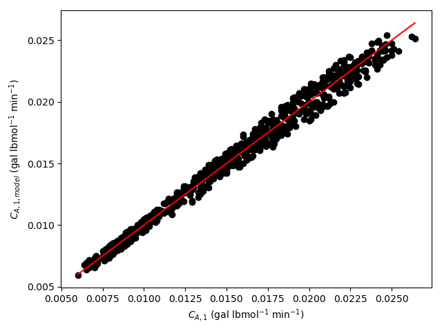
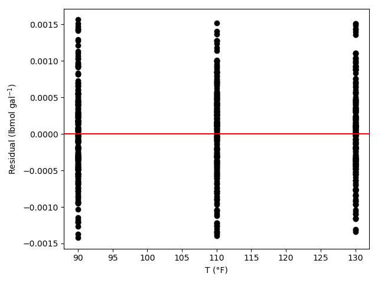
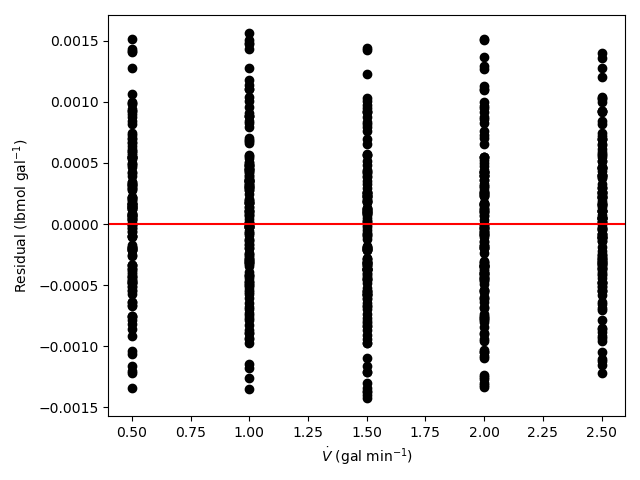
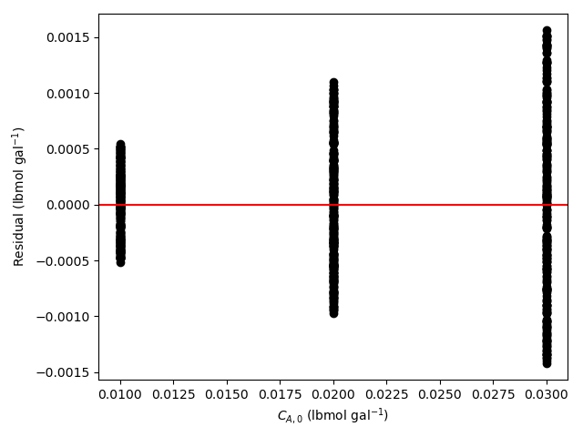
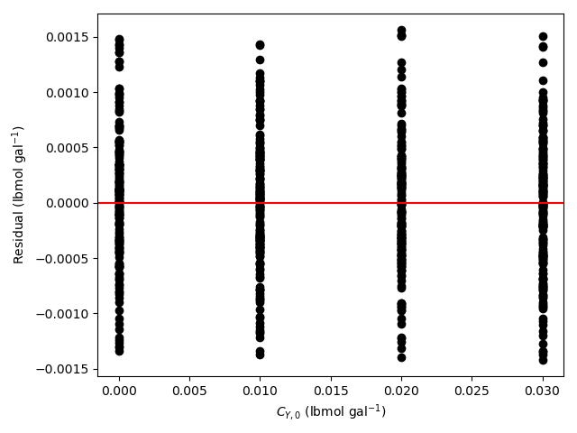
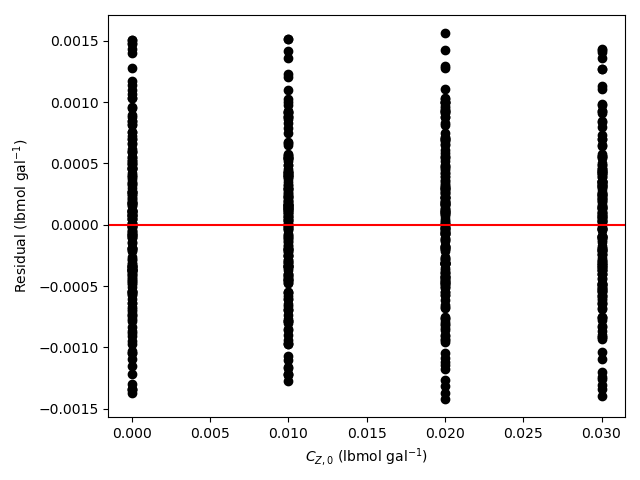
Click Here to See What an Expert Might be Thinking at this Point
The deviations of the data points from the line in the parity plot are not large, the deviations of the residuals about zero are random with no apparent trends, the coefficient of determination is close to 1, and the upper and lower limits of the 95% confidence intervals for \(E_f\) and \(E_r\) are close to the estimated parameter value. The uncertainties in \(k_{0,f}\) and \(k_{0,f}\) are slightly greater, but still acceptable. This indicates that the rate expression is acceptabley accurate.
When used with the rate expression parameters shown in Table 20.6, the accuracy of the proposed rate expression in describing the concentration and temperature dependence of the rate, within the range of concentrations and temperatures investigated, is acceptable.
20.6 Symbols Used in Chapter 20
| Symbol | Meaning |
|---|---|
| \(i\) | index denoting a reagent. |
| \(k\) | Rate coefficient, an additional subscript denotes the reaction or direction of the reaction. |
| \(k_0\) | Arrhenius pre-exponential factor, an additional subscript denotes the reaction or direction of the reaction. |
| \(f\left(\right)\) | A mathematical function of the variables within the parentheses. |
| \(\dot{n}_i\) | Molar flow rate of reagent \(i\), an additional subscripted “0” denotes the flow into the reactor and “1” denotes flow from the reactor. |
| \(r\) | Net rate of reaction per unit fluid volume. |
| \(x\) | Independent variable in a linear model. |
| \(y\) | Dependent variable in a linear model. |
| \(y_i\) | Mole fraction of reagent \(i\). |
| \(C_i\) | Concentration of reagent \(i\). |
| \(CI\) | Subscript denoting a 95% confidence interval, an additional “u” or “l” denotes the upper or lower limit of the interval. |
| \(E\) | Activation energy, an additional subscript denotes the reaction or direction of the reaction. |
| \(P\) | Pressure. |
| \(P_i\) | Partial pressure of reagent \(i\). |
| \(R\) | Ideal gas constant. |
| \(R^2\) | Coefficient of determination. |
| \(T\) | Temperature. |
| \(V\) | Volume of fluid within the reactor. |
| \(\dot{V}\) | Volumetric flow rate. |
| \(\alpha_i\) | Reaction order for reagent \(i\). |
| \(\epsilon\) | Residual, a subscripted “expt” denotes an experiment residual and a subscripted index denotes an ATE residual. |
| \(\nu_i\) | Stoichiometric coefficient of reagent \(i\). |
| \(\dot{\xi}\) | Apparent extent of reaction. |
| \(\tau\) | Space time. |